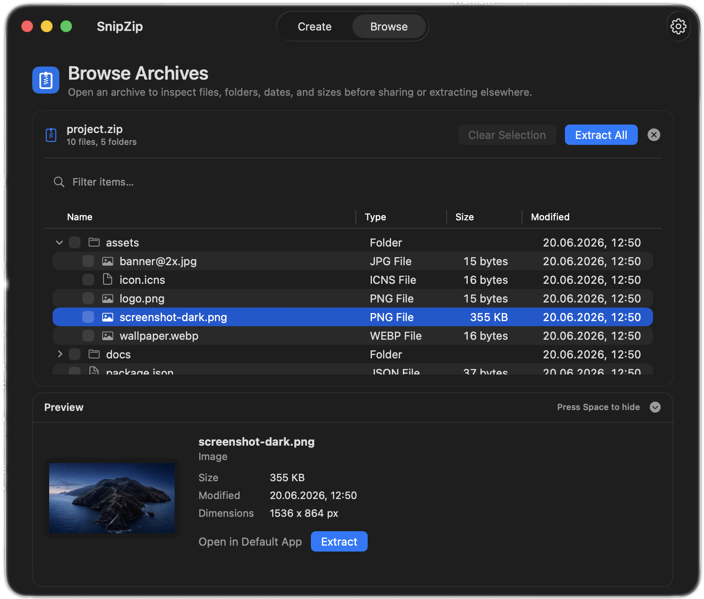
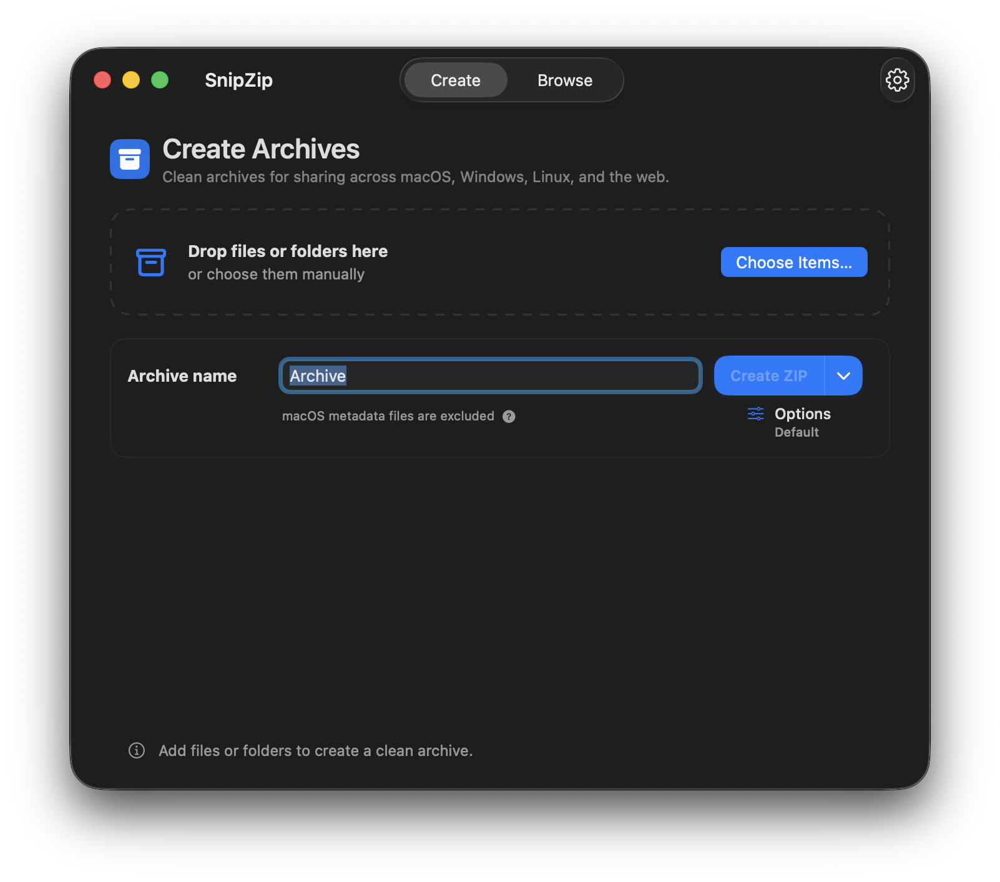
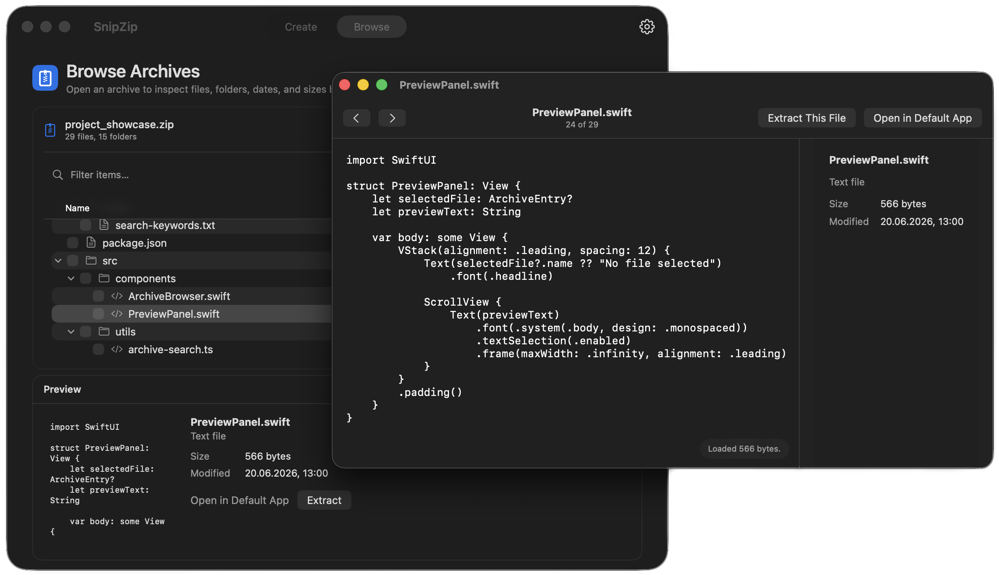

Native macOS archive utility
One app for every archive.
Create, browse and extract archives with a modern, native macOS experience.


Clean by default
Share clean ZIP files.
SnipZip automatically removes hidden macOS metadata such as .DS_Store, __MACOSX, AppleDouble files and resource forks.
- No extra folders
- No hidden Mac metadata
- Ready for Windows, Linux and the web
Large archives
Work faster with large archives.
Search, preview and extract exactly what you need without unpacking everything first.

Format support
More than ZIP.
Open, browse and extract the archive formats you actually run into.
Supports 20+ archive formats.*
* ZIP, 7Z, RAR, TAR, TAR.GZ/TGZ, TAR.BZ2/TBZ, TAR.XZ/TXZ, TAR.ZST/TZS, TAR.BR, TAR.LZ4, TAR.LZ/TLZ, TAR.LZO/TZO, TAR.LRZ/TLRZ, GZ, BZ2, XZ, ZST/ZSTD, BR, LZ4, LZMA, Z, LZIP, LZOP, LRZIP, ISO, CAB, CPIO, AR, LHA/LZH, MTREE, WARC, UU/UUE, XAR, DEB, RPM, split archives, and more.
SnipZip Pro
One-time purchase. No subscription.
Upgrade once to unlock advanced archive features.
Free
- Create clean ZIP archives
- Browse and extract archives
- Open encrypted archives
- Password-protected extraction
- Finder integration
Pro
- Everything in Free
- Create 7Z, TAR, ISO and more
- Encrypt ZIP and 7Z archives
- Split archives
- Archive preview
- Command-line tools
Private by design
Your files stay on your Mac.
No analytics. No telemetry. No account. No uploads required. SnipZip works locally in the macOS sandbox.